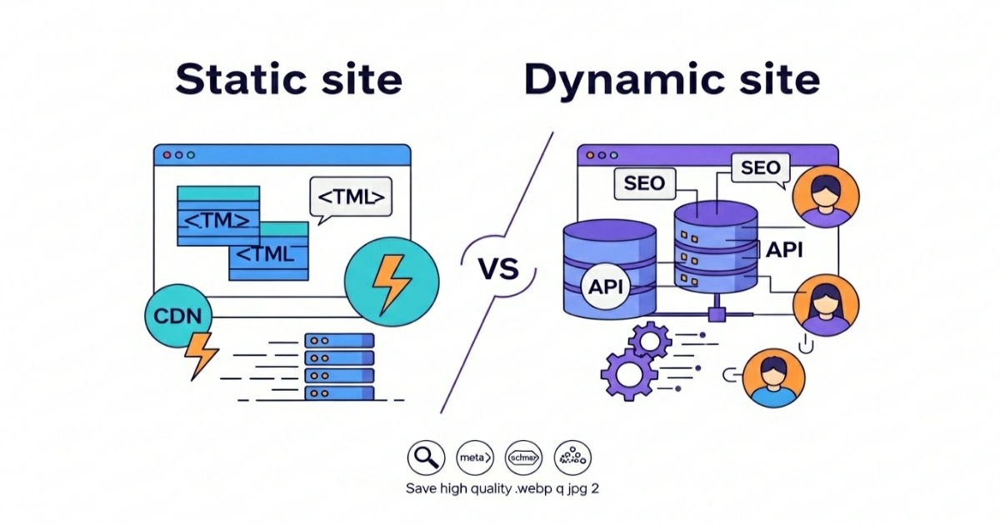

November 12, 2025
Static vs Dynamic Websites — Which One Grows Your Business Faster? (2026 Guide)
Choosing between a static and a dynamic website is one of the most important decisions every business owner, startup, or crypto project founder faces. The right decision can directly affect your speed, SEO, scalability, and conversion rate.
In this 2026 guide, I’ll explain the difference between the two in simple terms, show you when to use each, and help you pick the one that will actually grow your business faster.
What Is a Static Website?
A static website is built with fixed files — usually HTML, CSS, and JavaScript. Each page loads instantly from a CDN.
- Best for: Landing pages, portfolios, company sites, blogs
- Key advantage: Speed + security
- Tech examples: HTML, CSS, JS, Astro, Hugo, Next.js export
What Is a Dynamic Website?
A dynamic website generates content on the fly using databases and server-side scripts like PHP, Node.js, or Python.
- Best for: Web apps, dashboards, e-commerce
- Key advantage: Personalization + real-time content
- Tech examples: WordPress, Laravel, Node.js, React SSR
Static vs Dynamic: The Business Impact
| Feature | Static | Dynamic |
|---|---|---|
| Speed | Lightning fast | Depends on server |
| Security | Very secure | Medium risk |
| Maintenance | Low | High |
| Scalability | Easy CDN scaling | Backend scaling needed |
| SEO | Strong | Needs optimization |
Which One Will Grow Your Business Faster?
Speed is the new currency. A site that loads under 2 seconds wins in SEO and conversions. Static wins here. But if your business requires dashboards, logins, or live data — dynamic or hybrid is best.
Most crypto & Web3 projects choose a hybrid setup: fast static landing page + dynamic DApp features.
How I Build the Perfect Hybrid Websites
At CryptoWebBuild, I combine static speed with dynamic power:
- Lightning-fast static hosting (Cloudflare Pages)
- API integration (DEX Screener, CoinGecko)
- SEO-first coding
- Responsive UI
Need Help Choosing the Right Type?
I can help you build a website that ranks, loads fast, and converts users into customers.
Get a Free Consultation View My ServicesFurther Reading
- Why Your Crypto Project Needs a Professional Website
- 5 Must-Have Features for a Successful Meme Coin Website
- How Much Does a Crypto Website Cost?
For more updates, visit the blog page or explore my latest projects.